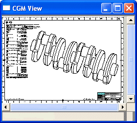
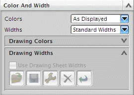
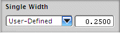

从颜色列表中，选择白纸黑字。
点击高级绘图。
在 SDI 打印控制-提交对话框中，点击 CGM 观察器。
现在，您的绘图将会是黑白的。

关闭 CGM 观察窗口。
在 SDI 打印控制-提交对话框中，点击取消。
要获取更多关于定制颜色的信息，参见：
图纸宽度组包含用来定义想要在绘图中使用的线宽选项。

如果您想要在绘图中看见三种标准线宽(细、正常、粗)，您将保留线宽设置为标准宽度。
如果您只想在绘图中使用一种线宽，就要将宽度选项设置为单线宽度。
这将会显示定义宽度按钮，以打开定制宽度对话框。
在定制宽度对话框的单线宽度列表中，可以选择相应使用的单线宽度类型—标准的细、正常、粗，或者由用户定义的这三种线型的宽度。
如果需要使用不可用的单线宽度，可以选择用户定义，然后在旁边的输入框中键入想要的值。

要获取更多关于控制线宽的信息，参见：